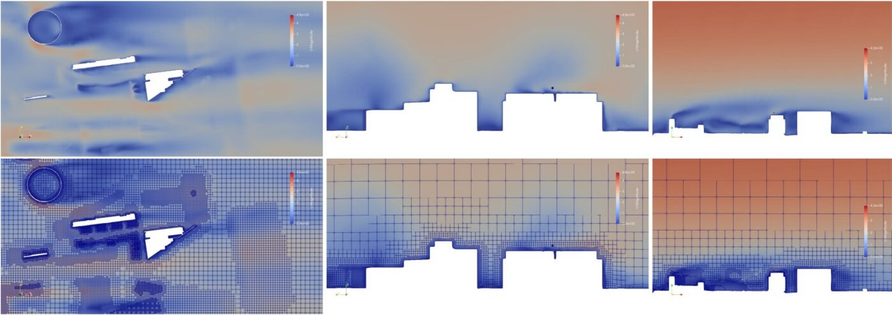
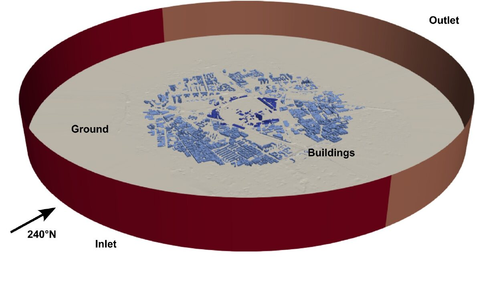

The problem
La Goccia is a 0.46 km² urban woodland in north Milan, next to the Politecnico campus and about to be redeveloped. Planners wanted to know how wind moves through it today, but turning a real neighborhood into a simulation-ready model is usually slow, manual work.
What I built
An end-to-end workflow, designed and run by me from raw data to the final simulation. LiDAR point clouds from 2022 and 2024 are cleaned and classified into ground, vegetation and buildings with a model trained on my own data; open-source tools then rebuild a watertight 3D model of 1,259 buildings, 156 of them at high detail. The model is meshed and simulated in OpenFOAM (steady RANS, k–ε) with an atmospheric boundary layer derived from Linate airport wind data. cutMesh was developed and tested separately; integrating it into this workflow is ongoing.
Result
Compared with 740 ten-minute samples from an on-site anemometer at 48 m (Jan 2024 – Aug 2025), the simulated mean wind speed is about 5% below the measured one: 1.60 vs. 1.69 m/s, a bias of −0.09 m/s. The workflow was then extended to a multi-region RANS thermal-comfort analysis of the district.
The RMSE of 1.26 m/s reflects gust-to-gust variability: a steady RANS model predicts the mean flow, not the fluctuations, which would require unsteady approaches such as URANS or LES.


